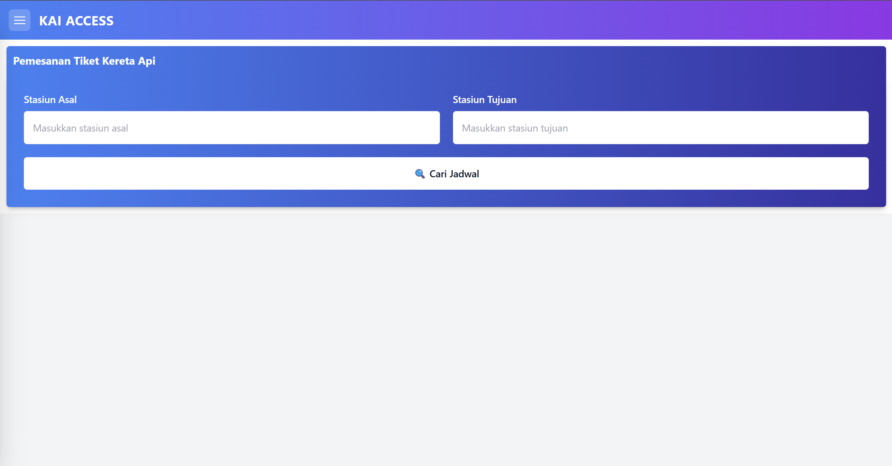
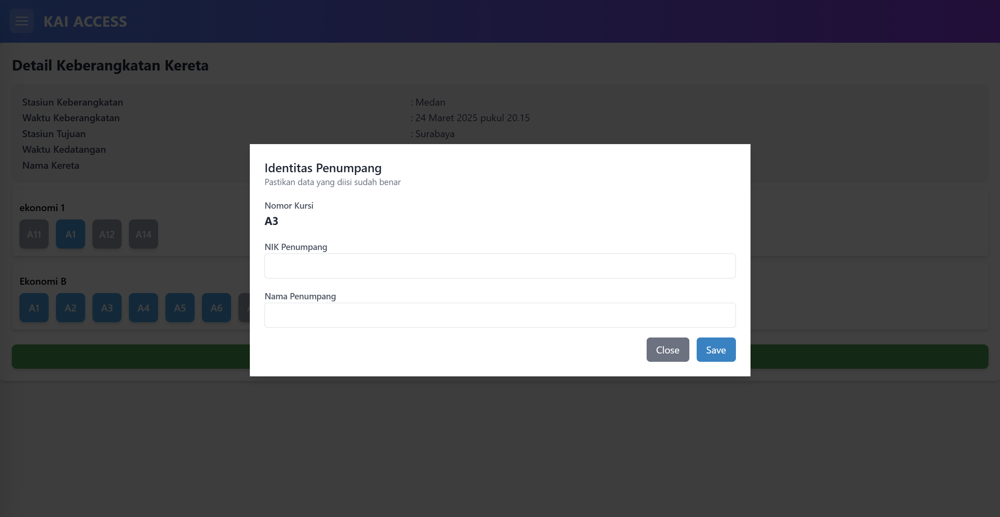
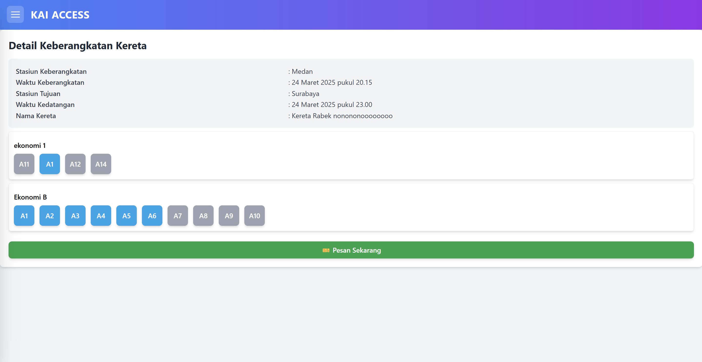
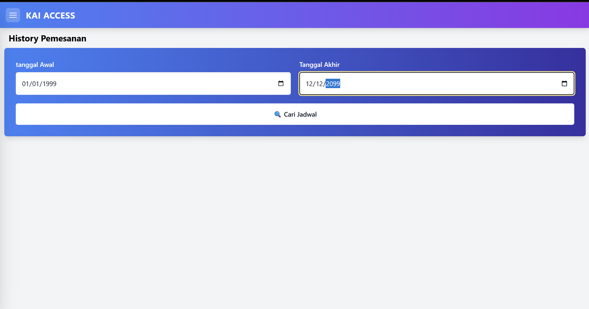
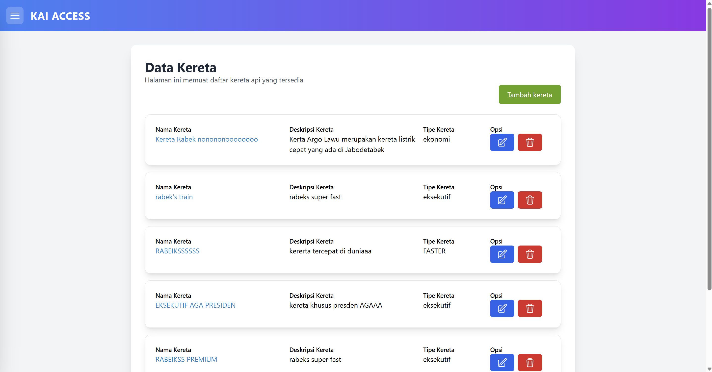
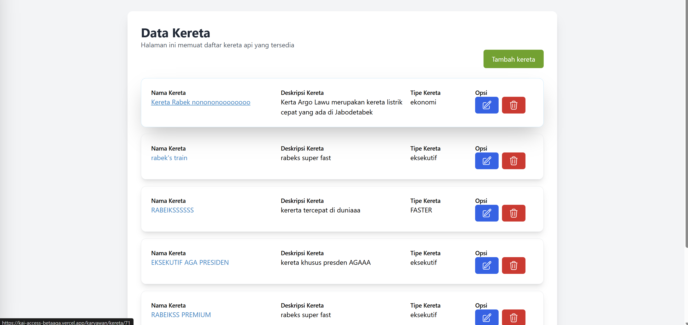
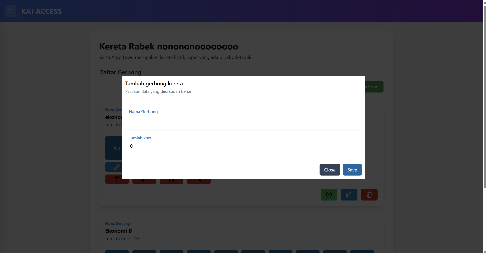

Pelanggan
1. Login pada web KAI ACCESS:
https://kai-access-betaaga.vercel.app

2. Login dengan username dan password default, lalu muncul tampilan berikut:

3. Isi alamat tujuan dan cari tiket kereta api.
4. Pilih tiket yang tersedia.

5. Pilih kursi yang kosong, lalu tekan ORDER.

6. Cek history tiket di menu History dengan memasukkan rentang tanggal.

Admin
Login sebagai admin untuk mengakses halaman admin
https://kai-access-betaaga.vercel.app

Setelah login Anda menemui halaman seperti ini:

Data Kereta
Tekan tombol tambah data kereta dan isi Nama, Deskripsi, serta Tipe kereta, lalu tekan SAVE.

Pilih opsi EDIT untuk mengedit data kereta yang telah dibuat.
Pilih opsi sampah untuk menghapus data kereta yang telah dibuat.
Data Gerbong
Klik pada nama kereta untuk masuk ke halaman Data Gerbong.

Tekan tombol TAMBAH DATA GERBONG dan isi Nama serta jumlah kursi lalu tekan SAVE.

Pilih opsi EDIT untuk mengedit data gerbong yang telah dibuat.

Pilih opsi SAMPAH untuk menghapus data gerbong yang telah dibuat.